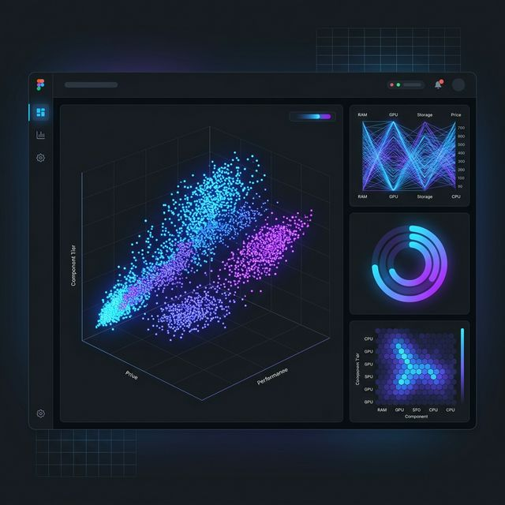
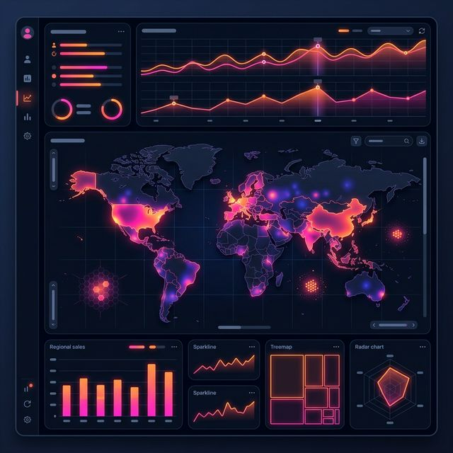
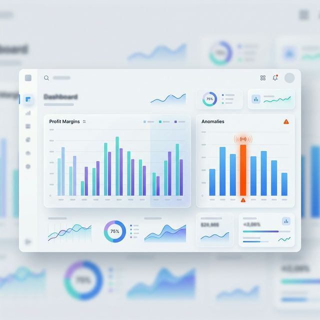

About Me
Data Science graduate from Karunya Institute of Technology specializing in predictive modeling and end-to-end AI deployments.
I design scalable machine learning systems — analyzing massive datasets, engineering robust pipelines, and deploying interactive applications that drive strategic decisions.
During my internships in advanced data analysis, I honed the ability to bridge the gap between abstract statistical models and tangible, front-line business solutions.
Technical Architecture
Core competencies across the entire data engineering lifecycle.
Machine Learning
- Random Forest, XGBoost
- Predictive Modeling
- Feature Engineering
Data Analysis
- Exploratory Data Analysis
- Statistical Inference
- Business Optimization
Programming
- Python Architecture
- Pandas, NumPy
- Scikit-learn, SciPy
Databases
- Relational MySQL
- Complex SQL Queries
- Data Aggregation
Visualization
- Power BI Reporting
- Tableau Dashboards
- Interactive Matplotlib
Deployment
- Streamlit Web Apps
- Model Integration
- Low-latency Inference
Smartphone Addiction Detection Engine
A real-time behavioral alerting system deploying advanced ensemble techniques.
Problem & Dataset
Unregulated smartphone usage invisibly decays student mental health. Processed a customized academic dataset capturing millions of latent behavioral, emotional, and collegiate performance metrics.
Approach & Architecture
Engineered latent feature pipelines to map psychological triggers, tuning an optimized XGBoost predictive model deployed strictly inside a fast-inference Streamlit dashboard.
Key Business Insights
Behavioral isolation outperformed standard academic variables, securing the model as an active, real-time early warning tool.
Applied Analytics Base
Evaluating scalable data pipelines, deep unsupervised learning, and dynamic predictive modeling.

Laptop Price Segmentation
Problem & Dataset
Retail pricing strategies lack dynamic segmentation benchmarks due to heavily fragmented hardware listings. Scraped an e-commerce array mapping unformatted textual specs against market pricing for over 1,000 devices.
Approach
Vectorized categorical structures strictly via Pandas, muted skew distributions, and trained a deterministic Random Forest classifier algorithm to cluster physical architectures into discrete pricing tiers.
Key Business Insights
Algorithmic clustering flawlessly replicated manual, human-defined mainstream/premium categories based purely on hidden GPU indicators.

Retail Sales Impact Analysis
Problem & Dataset
Supply chain over-saturation initiated by localized blind spots in inventory forecasting. Analyzed a complex multi-regional transactional database covering two operational years of retail records.
Approach
Sanitized deep granular transaction hashes, mathematically modeled temporal demographic metrics, and synthesized cross-comparative dashboards tracking quarterly momentum shifts over geographic grids.
Key Business Insights
Proved that reorganizing hyper-regional inventory based strictly on the derived demand momentum could drastically slice annual warehouse holding weights.

Superstore Advanced EDA
Problem & Dataset
Severe turnaround latency in manual financial reporting delaying C-suite pivots. Ingested standard 'Superstore' operational arrays encompassing physical profit margins intersecting with shipment SLA targets.
Approach
Constructed an automated exploratory data analysis (EDA) pipeline utilizing generative AI query loops to systematically scrape statistical anomalies across 500+ micro-categories.
Key Business Insights
Autonomous aggregation flagged core negative-profit engines previously masked inside high overall revenue figures, prompting major promotional restructuring.
Dynamic Housing Valuation
Problem & Dataset
Rapid real estate acquisitions lacking reliable mid-market property valuations. Processed highly dense structural ledgers linking geological zoning attributes directly to final transactional pricing.
Approach
Applied algorithmic variance inflation factor (VIF) limits to purge underlying multicollinearity noise, tuning a strict Linear Regression model packaged immediately inside a live inference dashboard.
Key Business Insights
The model statistically confirmed qualitative hunches: micro-localized neighborhood clustering carried vastly stronger predictive power than absolute property dimensions.
Let's build something.
Currently open for new opportunities. Whether you have a complex data architecture question or just want to say hi, I will try my best to get back to you!